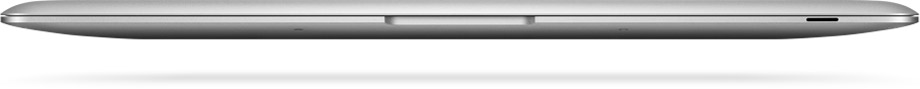
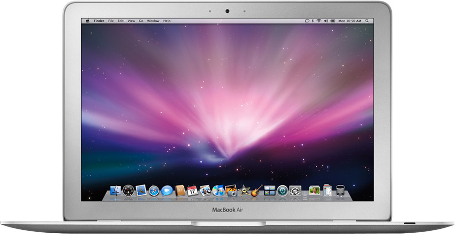
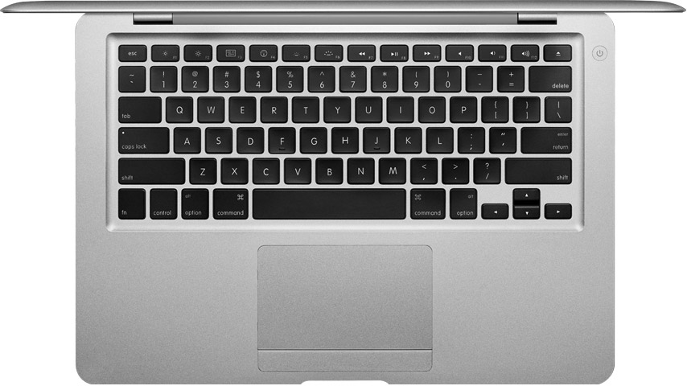

重新定义笔记本电脑的跨时代意义。
2008 年的 MacBook Air 不只是更薄的 Mac。它把“便携电脑”的重心从堆叠接口和光驱，推向轻薄机身、无线协作、闪存存储与一体化工业设计。之后十多年，几乎所有高端笔记本都沿着这条路继续前进。

从“带着电脑出门”到“电脑自然随身”。
MacBook Air 将全尺寸键盘、13.3 英寸屏幕和铝合金机身压缩进楔形轮廓里。0.16 到 0.76 英寸的厚度不是单纯炫技，它改变了用户对笔记本的期待：电脑不再是包里的负担，而是可以长期随身携带的工作工具。
- 3.0 磅
- 约 1.36 千克
- 0.16 英寸
- 最薄处厚度
- 13.3 英寸
- 全尺寸宽屏体验

轻薄没有牺牲核心体验。
它保留了 13.3 英寸 LED 背光宽屏、全尺寸键盘和宽大的 Multi-Touch 触控板。真正重要的不是“去掉了什么”，而是 Apple 选择保留什么：屏幕、键盘、触控、系统体验仍然是完整的 Mac。
少接口不是缺口，而是一种方向。
MacBook Air 用极少的机身开口表达了一个激进判断：未来的笔记本会越来越依赖 Wi‑Fi、蓝牙、远程文件、在线音乐和网络服务。光驱、以太网和大量外设接口从“默认配置”变成“按需扩展”。
- 无线网络成为移动办公的基础。
- 外置 SuperDrive 让光驱从机身里移出。
- 更少开口带来更完整的一体式外壳。

为闪存笔记本打开入口。
MacBook Air 让 SSD 从少数发烧友配置进入主流讨论。更快唤醒、更少机械部件、更适合移动场景，这些后来成为轻薄本的基本体验。它也让“速度”开始不只等于处理器频率，而是系统响应、启动、休眠与携带之间的整体效率。
它留下的不是一个造型，而是一套新默认值。
MacBook Air 发布后，行业开始系统性追求更薄的机身、更长的续航、更快的闪存、更少的机械结构和更高的一体化程度。后来的 Ultrabook、Retina MacBook、Apple Silicon MacBook Air，都能看到这条路线的延续。
2008MacBook Air 登场，轻薄成为高端笔记本的新叙事。
2010第二代 Air 强化闪存和轻薄形态，影响力扩大。
2012轻薄本成为行业竞赛，Ultrabook 概念兴起。
2020M1 MacBook Air 取消风扇，把低功耗高性能推向新阶段。
关键数字。
| 发布时间 | 2008 年 1 月，Macworld 发布 |
|---|---|
| 定位 | 超轻薄 13 英寸 Mac 笔记本 |
| 重量 | 约 3.0 磅 / 1.36 千克 |
| 机身 | 楔形铝合金一体式设计 |
| 屏幕 | 13.3 英寸 LED 背光宽屏 |
| 输入 | 全尺寸背光键盘，多点触控触控板 |